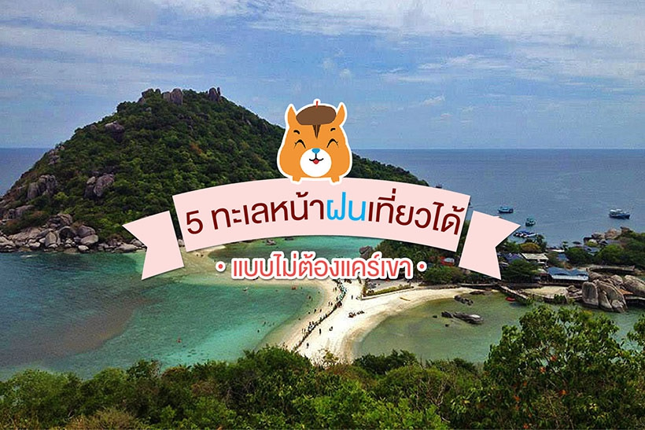

ที่เที่ยวทะเลหน้าฝน : 5 ทะเลหน้าฝนเที่ยวได้แบบไม่ต้องแคร์เขา

1. เกาะเสม็ด - ระยอง
เกาะเสม็ด เป็นอีกหนึ่งเกาะที่สามารถไปเที่ยวกันได้เกือบตลอดทั้งปี นอกจากนี้บนเกาะเสม็ดยังเพียบพร้อมละครบครันไปด้วยการบริการที่สะดวกสบายมีชายหาดหลายหาดให้เราได้เลือกพักผ่อนกับแบบชิลๆ ถ้าอยากท่องเที่ยวแบบคึกคักก็ต้องไม่พลาดที่เลือกที่พักในย่านหาดทรายแก้ว


2. เกาะช้าง - ตราด
เกาะช้าง เป็นเกาะที่ใหญ่ที่สุดในฝั่งอ่าวไทย เกาะนี้จึงมีสถานที่ท่องเที่ยวที่หลากหลายไม่ว่าจะเป็นทะเลภูเขา น้ำตก และแนววิถีชีวิต

3. เกาะกูด - ตราด
เกาะกูดยังมีที่พักบรรยากาศดีทั้งแบบเลียบริมทะเล เลียบริมคลองให้คุณได้เลือกพักตามชอบ หรือถ้าใครอยากไปหาที่หลายรูปเกาะนี้ก็ยิ่งเหมาะเพราะเขามีสะพานไม้ยื่นลงทะเลให้คุณได้โพสท่ากันแบบไม่ต้องกลัวมุมซ้ำอย่างแน่นอน


4. เกาะนางยวน - สุราษฎร์ธานี
เกาะนางยวน เกาะเล็กๆ ที่มีเกาะเชื่อมกันสามเกาะ และไฮไลท์ของที่นี่คือต้องไม่พลาดไปชมวิวจากมุมสูงที่สามารถมองเห็นทั้งเกาะเชื่อมต่อกันได้อย่างสวยงาม


5. เกาะเต่า - สุราษฎร์ธานี
เกาะเต่า เกาะเมล็ดถั่วที่มีชื่อเสียง เป็นแหล่งดำน้ำตื้นและดำน้ำลึกที่ชาวต่างชาติจากทั่วโลกให้นิยมอย่างมากและนอกจากความสวยงานของโลกใต้น้ำแล้ว เกาะเต่ายังเป็นเกาะที่มีสถานที่ท่องเที่ยวที่คึกคัก บนเกาะมีบาร์ ร้านอาหารและกิจกรรมอื่นๆ ให้ทำอย่างมากมาย